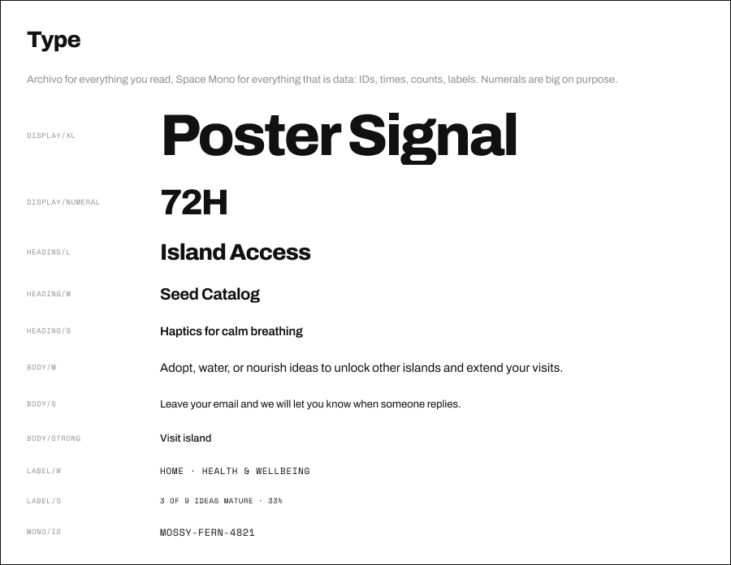
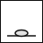
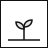
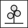
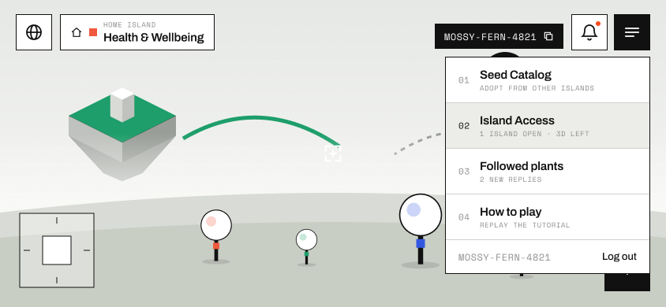
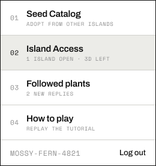
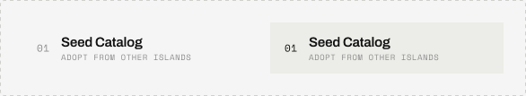

Phase 1: tokens and core components built in plain HTML and CSS from the Figma design system. Each block shows the code on the left and the Figma render on the right. Figma file 6QNXwAjpDU1niZin1aiWby.
Black and white carry the interface. Island hues are the only color. Signal orange is reserved for the unread dot and alerts.
Code · tokens.css
Figma
Type
Foundations 12:104
Archivo for everything you read. Space Mono for everything that is data: IDs, times, counts, labels.
Code · .t-* classes
Display/XL
Poster Signal
Display/Numeral
72H
Heading/L
Island Access
Heading/M
Seed Catalog
Heading/S
Haptics for calm breathing
Body/M
Adopt, water, or nourish ideas to unlock other islands and extend your visits.
Body/S
Leave your email and we will let you know when someone replies.
Body/Strong
Visit island
Label/M
Home · Health & Wellbeing
Label/S
3 of 9 ideas mature · 33%
Mono/ID
MOSSY-FERN-4821
Figma

Icons
Foundations 12:168 · 32 icons
24 px, 1.8 px square-cap stroke. Exported from Figma; drawn as a mask so the stroke follows the text color.
Code · .ui-icon--{name}
Figma
Island badges and plant stages
12:404 · 12:433
Badge glyphs are placeholders until Ray delivers the island icons (swap the glyph, keep the square).
Code · .ui-badge, .ui-stage
Island Badge
Plant Stage



Figma
Button
13:41 · Primary, Secondary, Ghost · M, S
Primary: the main action in a panel. Secondary: alternatives. Ghost: inline links like View idea. S buttons get an invisible 44 px hit area.
Code · .ui-btn
Figma
States · placeholder (not drawn in Figma yet)
Disabled
Disabled secondary
HoverUnderlines the label
PressedNudges down 1 px
FocusPress Tab: 2 px black ring with a white gap
Icon button
13:69 · HUD, Active · M 46, L 58
Square, icon only. Active is the selected state (for example the menu while open). The plus button is L.
Code · .ui-icon-btn
Figma
In use · from the Figma variants
Bell, unread
Bell, read
Menu, closed
Menu, open
Plus, idle
Plus, ready (×)
Disabled · placeholder
Figma fix needed: in the Active L variant (13:64), only the globe's outer circle is set to white. The inner meridian and equator strokes are still black, so on the black square it reads as "( )". The code draws the full globe in white. In Figma, set all three strokes in that instance to text/inverse.
Plus button: matches Player View Default (20:3) and Ready to throw (20:313). It is the black Active L square in both states; only the + rotates 45° into ×. Menu open (20:147) keeps the menu glyph on the black button.
ID label and island chip
13:81 · 13:105
The anonymous ID is the only public name. The chip shows the island you are on, with the home icon, a color square, and the name, so color is never the only signal.
Code · .ui-id-label, .ui-island-chip
Home islandHealth & Wellbeing
VisitingSustainability
Figma
Figma uses the home icon on the Visiting chip too. Worth a look: a different glyph for Visiting would add a second non-color signal.
Toast
13:124 · Access gained, Access full, Planted
Top center for 3 seconds. The island stripe carries the hue; the words carry the meaning.
Code · .ui-toast
+24 hours
Sustainability access · 3d 04h left
Access full
Sustainability · 5 days (cap)
Planted
Haptics for calm breathing · on your island
Figma
Copy check: the confirmed toast strings are "+48 hours", "+24 hours · Games & Play access: 3 days 4 hours", and "Access full (5 days)". Figma splits them into a title and a detail line with a shorter format ("3d 04h left", "5 days (cap)"). The gallery follows Figma. Confirm the split is fine with the team.
Prompt
13:153 · Edge, Locked, Feedback
Frosted in-world notices. One line, except Locked.
Code · .ui-prompt
The bridges are this way
Bridge locked · Games & Play
Adopt a Games & Play seed, then water or nourish it to unlock this bridge.
+1 water · Sustainability access until Tue 3 p.m.
Figma
Copy check: the Figma Locked prompt ends with a period ("...to unlock this bridge.") and the confirmed copy has none. Minor; flagging it so it's a deliberate choice.
Over the scene
Translucency check on world colors
HUD pieces on the world sky and ground tokens, to check that the frosted surfaces still read.
Live components in an 844 × 390 landscape phone frame. Copy the ID, open the menu (mouse or keyboard: Tab to the menu button, then the arrow keys and Escape), ready the acorn, and fire toasts.
Code · live
Home islandHealth & Wellbeing
Tap to throw
Figma · Player View / Default 20:3
Figma · Player View / Menu open 20:147

Menu
Menu 14:68 and Menu Item 14:67. Selected (muted fill, dark index) doubles as hover, keyboard focus, and the item whose panel is open.
Code · createMenu()
Figma


Menu contents · your call
Three options for what the menu holds. The bell and ID label stay outside the menu in all three, as in Figma. The live HUD above uses A until you choose.
Every state
Default, selected and the HUD look come from Figma. Hover, focus, pressed and disabled are placeholders until Figma has those variants.
Icon button (HUD M) and buttons (Primary, Secondary, Ghost)
Frosted tip and hint
The tip is not drawn in Figma; it reuses the Locked prompt's anatomy (eyebrow, body, one action) for "Got it" guidance. Over the scene it is frosted; without blur support, or with Increase Contrast on, it becomes solid white.
Code · .ui-tip, .ui-hint
Tap to throw
Tip copy is placeholder, paraphrased from context.md (movement hint, first catalog visit). It needs confirmed wording before it ships.
Motion
motion.css · motion.mjs · tokens in tokens.css
Quick, precise, graphic. Every curve decelerates into place or accelerates away, with no overshoot. Effects that belong in the 3D scene are mocked in 2D here, with a note on who hooks them up. To check reduced motion, turn on Reduce Motion in your OS (or emulate it in DevTools): slides become fades, decorative effects switch off, and values jump to the new number.
Panel slide in
base 200 ms · ease-out · backdrop fades · exit fast 150 ms
Player View
Hook-up (Celena): wrap each panel in .ui-layer with a .ui-backdrop and .ui-panel, then call openPanel(layer) and closePanel(layer). Same for Island Access, Seed Catalog, Notifications and plant detail.
Menu drop down
fast 150 ms · ease-out · button to black in 80 ms
Tap the menu button
MOSSY-FERN-4821
Hook-up (Celena):toggleMenu(button, menu). The button's aria-expanded drives the black state. Items are a stub here; the real Menu component (14:68) comes in Phase 2.
Plus to ×
fast 150 ms · ease-out · rotate 45°
Tap the button
Hook-up (Celena): add ui-plus to the seed button and call setPlusReady(button, true/false). The existing #seed-mode already rotates its icon 45° with aria-pressed, so this is the same behavior on the new timing.
Toast
in 200 ms ease-out · hold 3 s · out 200 ms ease-in
Hook-up (Celena): one .ui-toast-region in the HUD, then showToast(region, toast). It removes the toast when it's done.
Access ring and numeral
count 600 ms · ease-out · fixed 120 h scale
Sustainability
2 days left
Hook-up (Phase 3, then Celena):setRing(svg, hours) and setNumeral(el, hours). The full Access Card (14:268) is built in Phase 3; this card is a stub to show the motion. Capping at 120 h is the server's job; the demo caps to show "Access full".
Water ripple and nourish pulse
ripple 700 ms · pulse 600 ms · ease-out · 2D mock
Hook-up (Celena now, Ray later): plants are drawn on the 2D canvas over the three.js scene, so for now scene.mjs draws two expanding ellipses (water) or a swelling disc (nourish) at the plant's base, timed with motionMs('--motion-duration-ripple') in the plant's origin island hue (thin rings for water, a filled disc for nourish). Once plants move into three.js, Ray can use a flat ring decal with the same timing. The feedback prompt ("+1 water · ...") stays the text signal.
Landing marker
valid: scale in 200 ms ease-out · invalid: shake 280 ms once
Open grass
Aim at open soil
Hook-up (Celena): the marker sits at the landing point in the scene. Either position this element over the projected point, or draw the marker on the canvas and scale or shake it with the same tokens.
Stage change
grow 400 ms ease-out from the base · old stage out 150 ms
Seed planted
Hook-up (Ray, then Celena): in the scene, Ray's next-stage model scales up from its base over --motion-duration-grow while the old one fades. Celena triggers it when a plant's stage changes. In panels and the catalog, swapStage(plant, src, alt) handles the thumbnail.
Dormant and revive
600 ms · ease-in-out · scale 0.7, grayscale
Mature plant
Hook-up (Ray, then Celena): Ray's dormant variant or a uniform scale to 0.7 plus a desaturated material, over --motion-duration-dormant. One interaction reverses it. The dormant label (Phase 5) carries the meaning in text.
Bridge unlock
lock drops 200 ms ease-in · line draws 500 ms ease-in-out
Hook-up (Celena for World View, Ray for 3D): World View bridges can use this SVG approach or the same dash animation on the canvas. In Player View, Ray's bridge model needs locked and open materials; the draw-in can be a sweep of the island color along the deck over --motion-duration-draw.
Unread dot
pulse 600 ms · ease-out · once, then still
Hook-up (Celena): when a notification arrives over Server-Sent Events, unhide the dot, update the bell's aria-label ("Notifications, 1 unread"), and call replay(dot).
Tutorial highlight and card
box draws 400 ms ease-in-out · card rises 200 ms after
Step 2 of 6
Plant your first idea
Tap + to ready an acorn, face open grass, then tap anywhere to throw.
Hook-up (Phase 4): the full Tutorial Card (16:389) and coach marks are built in Phase 4. This shows the timing: replay the highlight on the target, then the card.